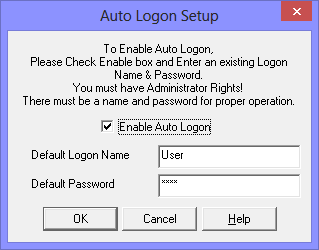

| My-T-Soft®: for Windows; Indestructible Keyboards and Indispensable Utilities; Version 1.80; User's Guide | ||
|---|---|---|
| Prev | Next | |
Open My-T-Soft Logon Utilities from Start Menu | (All) Programs | My-T-Soft
Select Setup Automatic Logon

There are 3 options available
Enable Auto Logon
Default Logon Name
Default Password
The Name and Password fields are disabled unless the Enable Auto Logon is checked On.
Check Enable Auto Logon On to enable the automatic logon of the Default User / Default Password combination. You must enter a valid User Name along with the proper Password to ensure proper operation of the Automatic Logon.
Notes:
If the Default User Name has a blank Password, this option will only work once - the next time you turn on the system, the Name / Password Logon screen will appear. A Password must be entered to ensure proper operation of the Automatic Logon.
You must have Administrator Rights to update the system with any changes.
Technical Notes: This section and settings are just a convenient user interface to registry settings specified by Microsoft (dating back to Window NT) to allow an automatic user logon. There are security issues - check with a System Administrator if there are any questions about using this convenience feature. There are 3 entries affected by this section: DefaultUserName, DefaultPassword, and AutoAdminLogon in the HKEY_LOCAL_MACHINE/Software/Microsoft/Windows NT/CurrentVersion/WinLogon registry key. When enabled, AutoAdminLogon=1, and when disabled, AutoAdminLogon=0. The DefaultPassword entry is stored as plain text. For an automatic logon, AutoAdminLogon=1, and a valid DefaultUserName with correct DefaultPassword must be set.